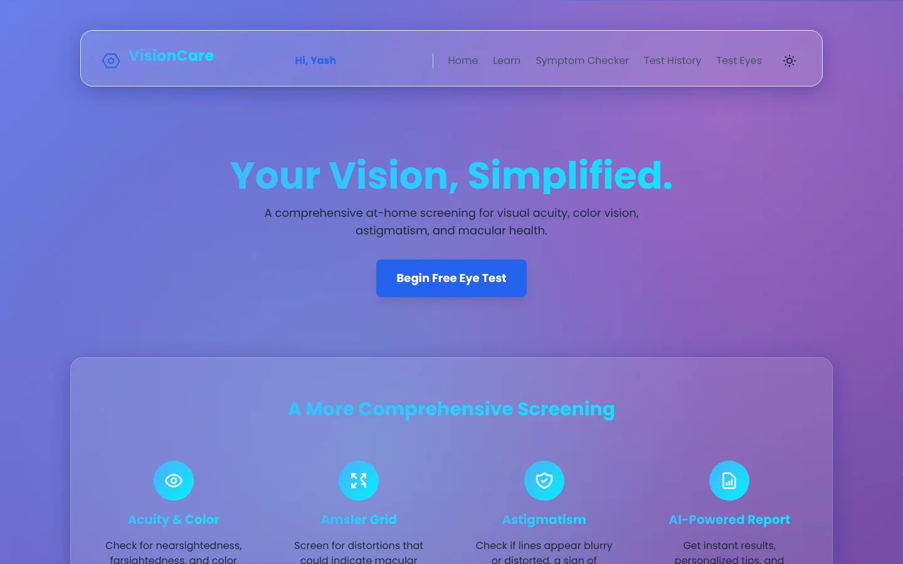

Deep learning, healthcare
VisionCare
An eye health web app that detects eye diseases from a photo, runs vision tests at home and explains symptoms with AI.
- Role
- Developer
- Model
- CNN, 5 classes
- Status
- Accepted for book publication, patent pending
- Code
- GitHub

The problem
Many eye conditions are caught late because screening means booking a clinic visit. I wanted a first check that anyone could run at home in a few minutes, with clear next steps when something looks wrong.
What I built
- Trained a convolutional neural network in Keras and TensorFlow that sorts eye photos into five classes: cataracts, uveitis, bulging eyes, crossed eyes and healthy. Images are resized to 224 × 224 and served from a Flask prediction API.
- Built an AI symptom checker on Groq Vision AI over a REST API. It takes typed symptoms, speech-to-text input or an uploaded eye report.
- Designed four at-home screening tests: visual acuity with screen calibration, color vision plates, an Amsler grid you draw on, and an astigmatism chart.
- Added sign-in, saved test history, a doctor finder and downloadable PDF reports to share with a doctor.
Results
92%accuracy detecting five eye conditions
<2.5 ssymptom checker response time under concurrent load
4at-home vision tests in one app
Screens
Click a screen to see it full size.
Built with
- Python
- Flask
- TensorFlow
- Keras
- Groq API
- REST API
- JavaScript
- Tailwind CSS
- jsPDF